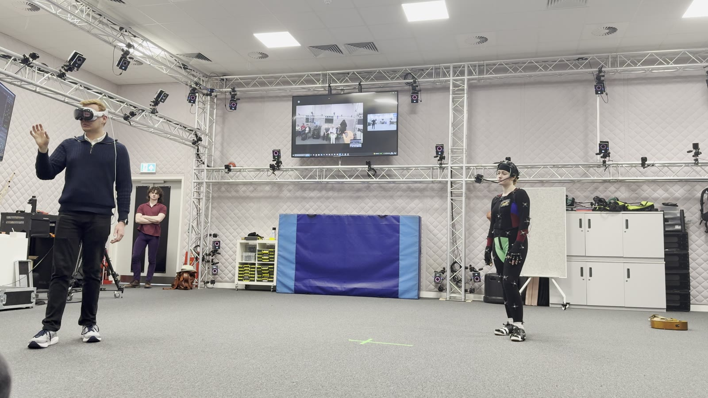
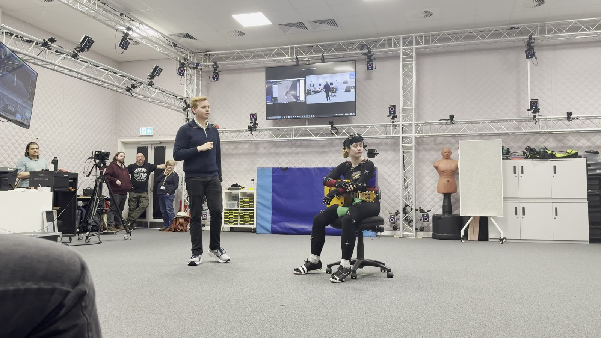
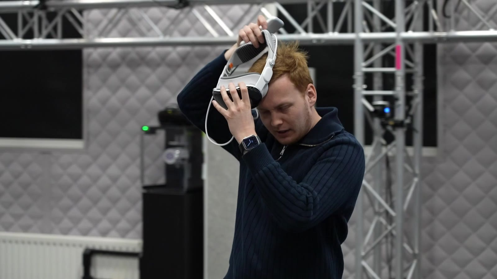

MOTION CAPTURE · AUGMENTED REALITY
Real-time motion capture into AR
Streaming a live performer's motion, captured on an optical mocap stage, straight into an augmented-reality headset in real time.
Overview
Working in the Centre for Creative and Immersive XR, I explored a live pipeline that takes a performer's movement from an optical motion-capture stage and drives a character that a second person can see, in real time, through an AR headset.
It sits at the intersection of two things I work with constantly — virtual production / mocap stages, and headset interaction design — and it's a foundation for live, co-located XR experiences where a real performer shares space with an audience.
What I did
- Set up real-time, high-quality previsualisation during capture using Autodesk MotionBuilder and Unreal Engine 5.
- Operated capture on a Vicon Shogun optical system and cleaned the resulting data.
- Streamed the live skeleton into an AR headset so a co-located viewer sees the performance mapped into their own space.
- Tuned the experience for low latency and legibility, the two things that make or break a live mocap-to-AR loop.
Selected views



// Swap in cleaner stills or a longer clip whenever you like — files live in assets/web/.